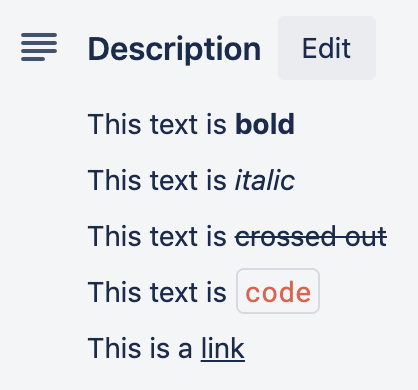
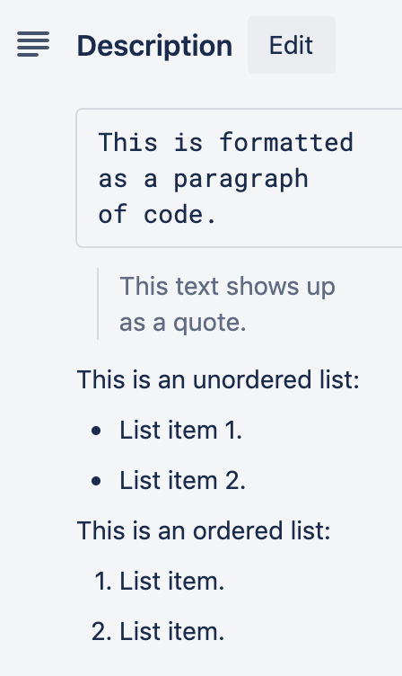

Markdown syntax for card descriptions
Markdown is a simple language used to format text. This can be used to modify your description text and more.
Syntax eligible for card descriptions, checklist items, and comments
- Bold text - Mark text in double asterisks, like **this**.
- Italic text - Mark text in single asterisks, like *this*. You can also use underscores to get the same result, for example: _this_.
- Strikethrough text - Cross out text by framing it with two tildes on each side, like ~~this~~.
- Inline code - Include inline code by wrapping it in a backtick (`) at the beginning and end of the code.
- Links - Create a functioning link by typing the link text in brackets with the URL in parentheses immediately afterward, like [this](http://www.trello.com).

Syntax eligible for only card descriptions and comments
- Horizontal line - A horizontal line spanning the entire description or comment may be added by creating a line with at least three hyphens.
- Code block - Include a block of code by wrapping it in three backticks (```) at the beginning and end of the block. The triple backticks have to be on a separate line. Ensure you have an empty line before and after the code block.
- Indent text / Block quotes - Indent text by including a “>” in front of each line of text that you would like to indent or quote.
- Bullet and numbered lists - Preface a series of lines with hyphens or numbers to create a list. Lists will only be formatted if you leave a blank line before the list, therefore beginning a new paragraph. You can add a space before the bullet mark to create nested bullets.
- Headers - Headers can be marked in several different ways. Text in #Single Hashes# will be interpreted like an <h1> HTML tag, or a larger header. Text in ##Double Hashes## will be interpreted like an <h2> HTML tag, or a smaller header.

Syntax eligible for only card descriptions
- Embedded images - Embed an image by putting the link text in brackets and the image URL or path in parentheses, following an exclamation mark, like: .
- Escaping Markdown - To use the markdown syntax literally, you can
escape the formatting using a backslash '\' before the symbols, like:
\*literal asterisks\*.